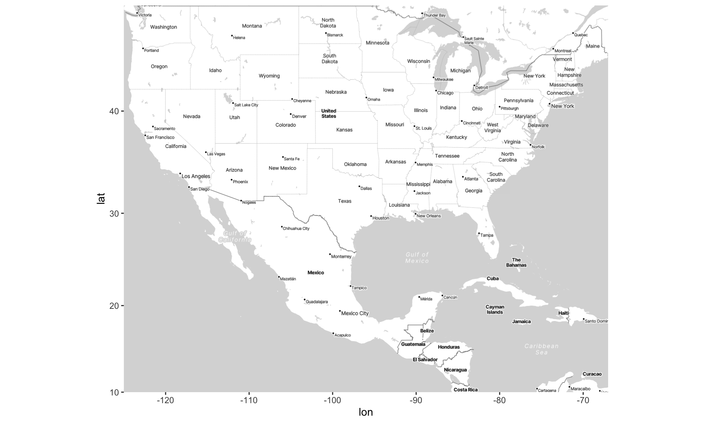
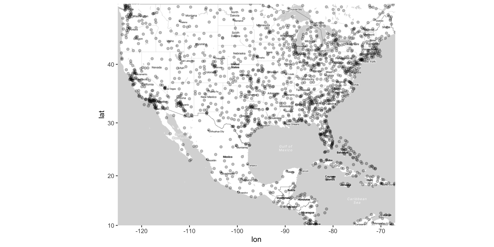
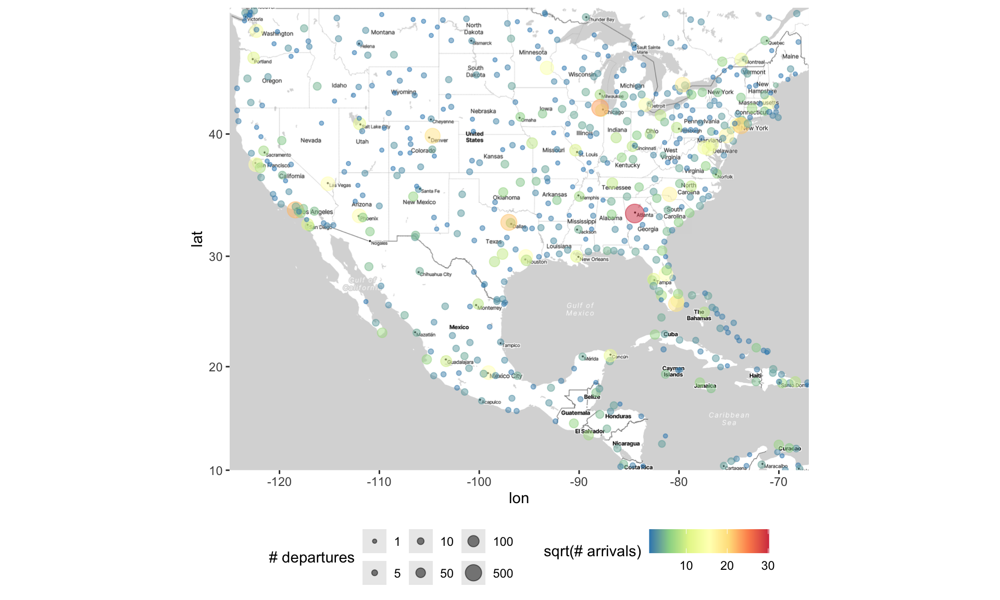
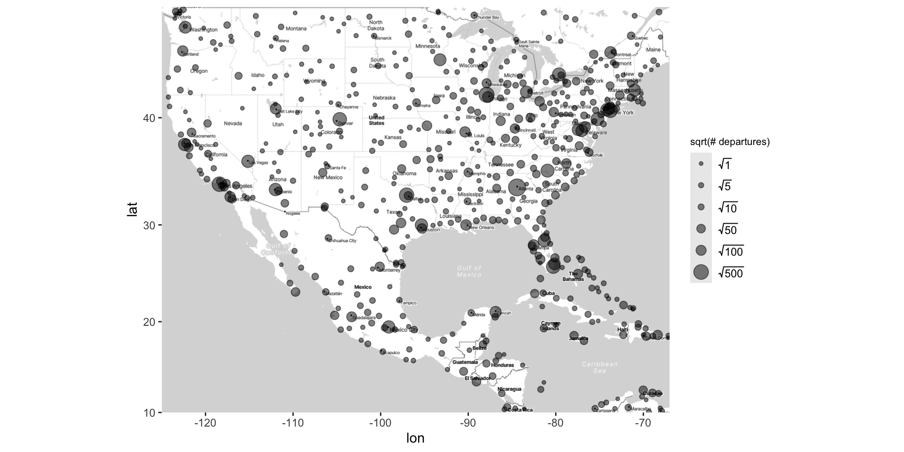
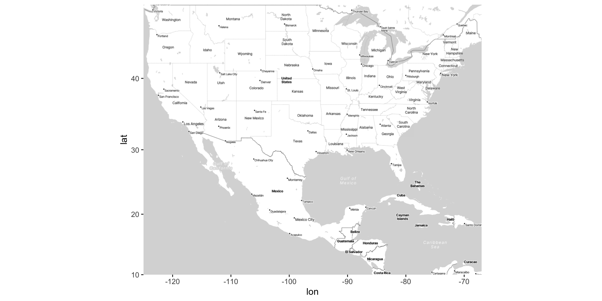
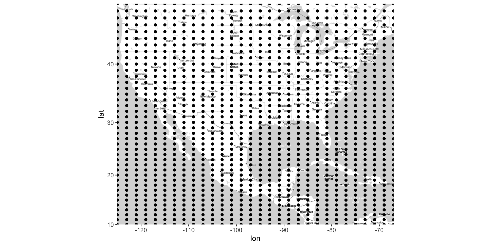
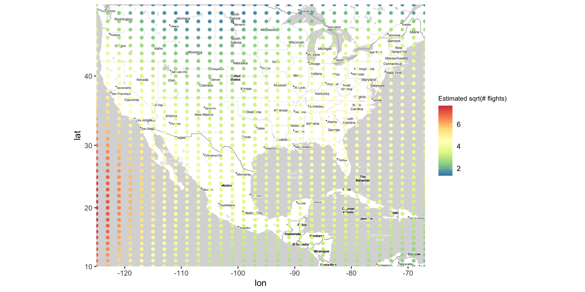
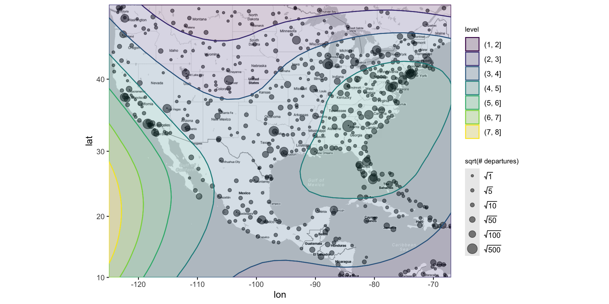

Visualizations and Inference for Spatial Data
2025-04-07
Announcements, previously, and today…
HW8 is due Wednesday April 9th by 11:59 PM ET
You do NOT have lab this week
Last time:
Discussed the role of animation in visualizations
Discussed various aspects of making high-quality graphics and relevant tools
TODAY: Visualizations and Inference for Spatial Data
How should we think about spatial data?
Typically location is measured with latitude / longitude (2D)
Latitude: Measures North / South (the “y-axis”)
Range is \((-90^{\circ}, 90^{\circ})\)
Measures degrees from the equator \((0^{\circ})\)
\((-90^{\circ}, 0^{\circ})\) = southern hemisphere
\((0^{\circ}, 90^{\circ})\) = northern hemisphere
Longitude: Measures East/West (the “x-axis”)
Range is \((-180^{\circ}, 180^{\circ})\)
Measures degrees from the prime meridian \((0^{\circ})\) in Greenwich, England
\((-180^{\circ}, 0^{\circ})\) = eastern hemisphere
\((0^{\circ}, 180^{\circ})\) = western hemisphere
Latitude and Longitude

Map Projections
Map projections: Transformation of the lat / long coordinates on a sphere (the earth) to a 2D plane
There are many different projections - each will distort the map in different ways.
The most common projections are:
Mercator Projection (1500s)

Mercator Projection (Tissot indicatrix)

Robinson Projection (Standard from 1963-1998)

Robinson Projection (Tissot indicatrix)

Winkel Tripel Projection (proposed 1921, now the standard)

Winkel Tripel Projection (Tissot indicatrix)

And many more… (see xkcd comic)

Visualizing spatial data on maps using ggmap
Draw map based on lat / lon coordinates
Put the box into
get_stadiamap()to access Stamen Maps (you need an API key!)Draw the map using
ggmap()to serve as base
Visualizing spatial data on maps using ggmap

Three main types of spatial data
Point Pattern Data: lat-long coordinates where events have occurred
Point-Referenced data: Latitude-longitude (lat-long) coordinates as well as one or more variables specific to those coordinates.
Areal Data: Geographic regions with one or more variables associated with those regions.
Each type is structured differently within a dataset
Each type requires a different kind of graph(s)
We’re going to review each type of data. Then, we’re going to demonstrate how to plot these different data types
Today: Point-referenced and point pattern
Next time: Areal data
Point-Pattern data
Point Pattern Data: lat-long coordinates where events have occurred
Point pattern data simply records the lat-long of events; thus, there are only two columns
Again, latitude and longitude are represented with dots, sometimes called a dot or bubble map.
The goal is to understand how the density of events varies across space
The density of the dots can also be visualized (e.g., with contours)
- Use methods we’ve discussed before for visualizing 2D joint distribution

Point-Referenced data
Point-Referenced data: Latitude-longitude (lat-long) coordinates as well as one or more variables specific to those coordinates
Point-referenced data will have the following form:
# A tibble: 3 × 6
lat lon altitude n_depart n_arrive name
<dbl> <dbl> <dbl> <int> <int> <chr>
1 -6.08 145. 5282 5 5 Goroka Airport
2 -5.21 146. 20 8 8 Madang Airport
3 -5.83 144. 5388 10 12 Mount Hagen Kagamuga AirportThe goal is to understand how the variable(s) (e.g.,
altitude) vary across different spatial locationsTypically, the latitude and longitude are represented with dots, and the variable(s) are represented with size and/or colors
Adding points to the map as usual
Altering points on the map (in the usual way)
ggmap(map) +
geom_point(data = airports,
aes(x = lon, y = lat,
size = sqrt(n_depart), color = sqrt(n_arrive)),
alpha = .5) +
scale_size_area(breaks = sqrt(c(1, 5, 10, 50, 100, 500)),
labels = c(1, 5, 10, 50, 100, 500),
name = "# departures") +
scale_color_distiller(palette = "Spectral") +
labs(color = "sqrt(# arrivals)") +
theme(legend.position = "bottom")Altering points on the map (in the usual way)

Inference for Spatial Data
There are whole courses, textbooks, and careers dedicated to this. We’re not going to cover everything!
However, there are some straightforward analyses that can be done for spatial data.
Point-Referenced Data:
Divide geography into groups (e.g., north/south/east/west) and use regression to test if there are significant differences.
Regression of \(\text{outcome} \sim \text{latitude} + \text{longitude}\). Smoothing regression (e.g., loess) is particularly useful here.
Visualizing Inference for Point-Reference Data
For basic linear regression:
Plot \((x, y)\) as points
Fit the regression model \(y \sim x\), to give us \(\hat{y} = \hat{\beta}_0 + \hat{\beta}_1 \cdot x\)
Plot \((x, \hat{y})\) as a line
For point reference data, we have the following variables:
- Inputs are longitude \(x\) and latitude \(y\), and outcome variable is \(z\)
Consider the following linear regression model: \(z \sim \text{lat} + \text{long}\)
Goal: Make a visual involving \((\text{long}, \text{lat}, \hat{z})\), and possibly \(z\).
Kriging
Goal: Make a visual involving (long, lat, \(\hat{z}\)) and possibly \(z\)
Want \(\hat{z}\) for many (long, lat) combos (not just the observed one!)
To do this, follow this procedure:
Fit the model \(z \sim \text{lat} + \text{long}\)
Create a grid of \((\text{long}, \text{lat})_{ij}\)
Generate \(\hat{z}_{ij}\) for each \((\text{long}, \text{lat})_{ij}\)
Plot a heat map or contour plot of (long, lat, \(\hat{z}\))
- You can also add the actual \(z\) values (e.g., via size) on the heat map
This is known as kriging, or spatial interpolation
Kriging: airline data example
Kriging: creating the map
Kriging: generating the grid
Kriging: generating predicted values
Kriging: plotting heat map of predicted values
Kriging overview
The steps used to create this map are…
Fit an interactive regression model using
loess()Make a grid of lat/long coordinates, using
seq()andexpand.grid()Get estimated outcomes across the grid using
predict()Use
geom_contour_filled()to color map by estimated outcomes
Recap and next steps
Spatial data is most commonly encoded in a 2D plane (latitude/longitude), i.e., maps
Decisions to make: what projection to use? do we need all specific geolocations, or just general areas (e.g., states)?
What kind of data do we have?
Point pattern: Scatterplots with density contours.
Point-referenced: Scatterplots with color/size, use regression/loess for inference.
HW8 is due Wednesday! You do NOT have lab this week
Next time: Areal data
Recommended reading: CW Chapter 15 Visualizing geospatial data, KH Chapter 7 Draw Maps